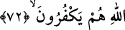
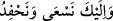

72. Allah size kendi nefislerinizden eşler yarattı, eşlerinizden de sizin için oğullar
ve torunlar yarattı ve sizi temiz gıdalarla rızıklandırdı. Onlar hâla bâtıla inanıp
Allah’ın nîmetine nankörlük mü ediyorlar?
“Allah” Teâlâ “size kendi nefislerinizden” cinsinizden “eşler yarattı,” Bu onlarla
ünsiyet kurup faydanıza olan şeyleri yapmanızı sağlamak ve çocuklarınızı kendiniz gibi
yetiştirmek içindir. İşte buna binaen bazı âlimler, kişinin cinlerden bir kadınla
evlenmesini imkânsız görürler. Çünkü arada cinsiyet benzerliği olmadığı için nikâh da
olmaz. Fakat çoğu âlimler bunun mümkün olabileceği görüşündedirler. Belkıs’ın ana-
babasından birinin cinlerden olması da buna delâlet eder. İbn Kelbî der ki: “O’nun
babası meliklerin büyüklerindendi. Cinlerden Seken kızı Rayhâne adlı bir kadınla
evlendi. Ondan Belkıs dünyâya geldi. Âkâmü’l-mercan adlı kitapta, bu konuda daha
başka hikâyeler de nakledilir.
Eğer: “Cinlerdeki ateş unsurunun galib oluşu, insan nutfesinin cinlerden olan bir
kadının rahminde oluşmasına mâni olur. Çünkü onda rutubet vardır. Ateşin harâretinin
şiddetinden orada yok olur. Cinlerden bir erkeğin insanlardan bir kadınla nikâhını da
buna kıyas et” dersen, buna şöyle cevab veririm: Onlar her ne kadar ateşten yaratılmış
olsalar da ateş unsuru üzere devamlı kalmazlar, insanoğlunun yaratıldığı toprak
unsurunun değişmesi gibi onların da yeme, içme, doğma ve üreme gibi sebeplerle
durumları değişir. İnsanların atası Âdem (a.s.) topraktan yaratıldığı gibi cinlerin atası
da ateşten yaratılmıştır. Ataları dışındaki diğer cinlere gelince insanların her biri
topraktan yaratılmadığı gibi, onların da her biri ateşten yaratılmamıştır.
“Eşlerinizden” başkasının eşinden değil, her birinizin kendi eşinden “de sizin için
oğullar ve torunlar yarattı” ‘Hafede (torunlar)’ kelimesi, ‘hâfid’in çoğuludur. O ise
hizmet ve itâatta çabuk olan demektir. Nitekim kunut duâsındaki __WORD__ “Senin
rızanı ve kulluğunu elde etmek için çalışır, koşarız” da bu anlamdadır. Dolayısıyla
yukarıdaki âyetin mânâsı şöyle olur: Allah, size hizmet ve itâatta son derece gayretli,
işlerinizde size yardım eden çocuklarınızdan evlâdlar ve benzerlerini yaratmıştır.
Fakir (Bursevî) der ki: “Bazılarının dediği gibi kızların evde hizmetleri daha fazla
olduğu için “el-hafede” kelimesinin kızlara hamledilmesi zayıf görülmüştür. Çünkü sûre
Mekkî olduğu için hitab müşrikleredir. Onlara ise kız çocuklarının doğduğu haber
verilince yüzleri kapkara kesilirdi. Dolayısıyla nîmet vermenin dile getirildiği bir yerde
“el-hafede”nin kızlara hamledilmesi uygun değildir.
“Ve sizi temiz” sizi bal ve benzeri leziz “gıdalarla” bu gıdaların bir bölümüyle
“rızıklandırdı” Çünkü tayyib olan rızıkların tamamı ancak cennettedir. Dünyâda tayyib
olan rızıklar ise ancak onlardan bir örnek olması içindir.
Fakir (Bursevî) der ki: Örfe göre âyetteki “et-tayyibat” ile kasdedilen dünyâ ve
cennetteki bütün nîmetler değil, şehir, kasaba ve muhtelif bölgelerdeki helâl rızıklardır.